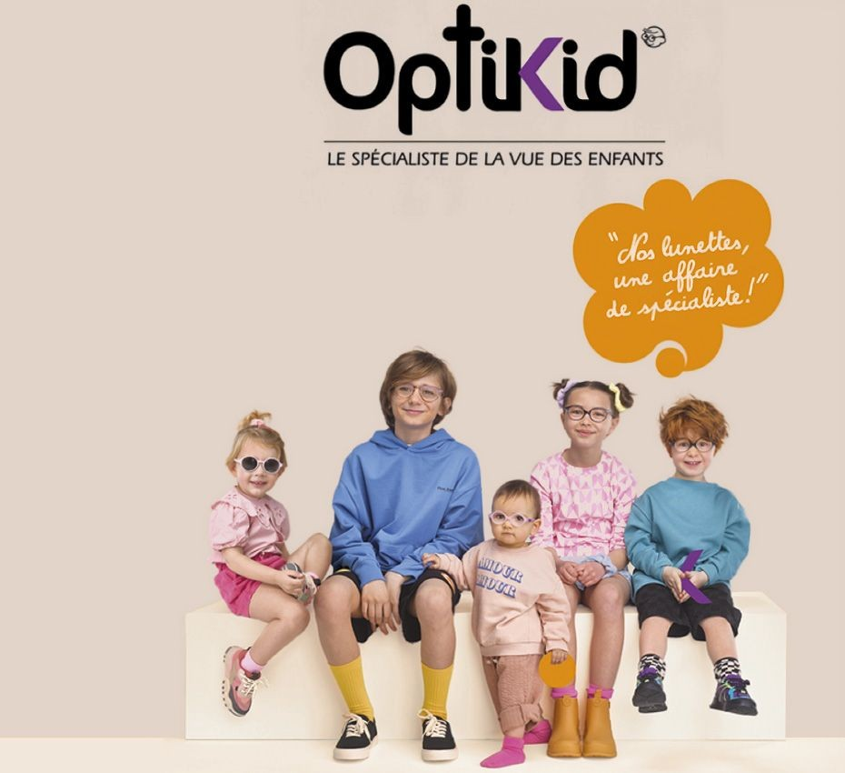
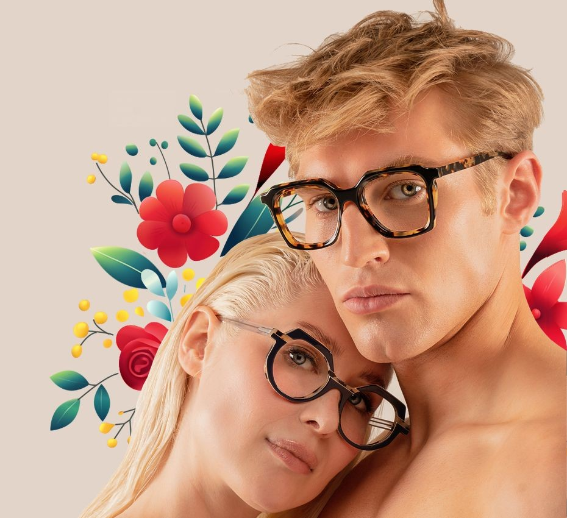
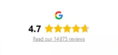
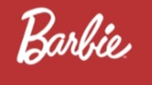

Nathalie Chamard Opticiens
Votre opticien à
l'Arbresle
Choisir des lunettes n'a jamais été aussi agréable, grâce à notre équipe aussi passionnée que qualifiées.
Prendre rendez-vous


Chamard Opticiens
Votre opticien à l'Arbresle
Depuis 1950, Chamard Opticiens met son savoir-faire au service de votre vision. Installée en plein cœur de L'Arbresle, notre entreprise familiale est bien plus qu'un simple opticien.
Vous y êtes accueillis par une équipe aussi passionnée que qualifiées.
Entièrement à votre écoute, nous vous conseillons dans une ambiance conviviale et colorée.
Vous choisissez vos nouvelles lunettes ou lentilles dans la bonne humeur !
Une expertise complète de l'optique
Pour garantir votre satisfaction, nous mettons à votre disposition un savoir-faire global de l'optique.
- • Une équipe qualifiée et diplômée, spécialisée en santé visuelle et contactologie.
- • Une prise de rendez-vous possible via la plateforme Doctolib : simple et rapide !
- • Des contrôles de vue réalisés sur place. Un gain de temps et une précision optimale.
- • Un atelier intégré pour le montage des verres, sans sous-traitance, qui garantit les meilleurs résultats et garantie une parfaite qualité de pose.
- • Un service d'opticien à domicile, disponible dans les nombreux villages environnant L'Arbresle : Bully, Chevinay, Épeaux, Fleurieux-sur-Arbresle, Lentilly, Saint-Germain-Nuelles, Saint-Pierre la Palud, Savigny, Sourcieux les Mines (69210), Aix, Belmont-d'Azergues, Charnay, Chasselay, Châtillon, Chazay-d'Azergues, Chessy, Civrieux-d'Azergues, Dommartin, Les Chères, Liézès, Lozanne, Marcy-d'Azergues, Saint-Jean-des-Vignes (69380), Bessenay, Bibost, Brullioles, Brussieu, Courzieu, Saint-Julien sur Bibost (69690).
Des lunettes pour tous les styles, toutes les envies
Vous trouverez, chez Chamard Opticiens, un large gamme de montures pour femme, homme et enfant, adaptées tous les morphologies, styles et budgets. Vous cherchez des lunettes élégantes, discrètes ou audacieuses ? Nous avons ce qu'il vous faut !
Optitail : l'expertise visuelle des enfants et adolescents. Gamille Clanton, Chamard Opticiens vous offre un choix varié de montures spécialement conçues pour les besoins des plus jeunes : des lunettes robustes, confortables et esthétiques, qui accompagnent leur quotidien en toute sérénité.
Lentilles de contact
Une large gamme de lentilles et de produits d'entretien, avec un suivi en magasin. Diplômés en contactologie, nos opticiens répondent à toutes vos questions et vous guideront vers les solutions les plus adaptées.

vonBo

Notre actualité
Contenu à venir
